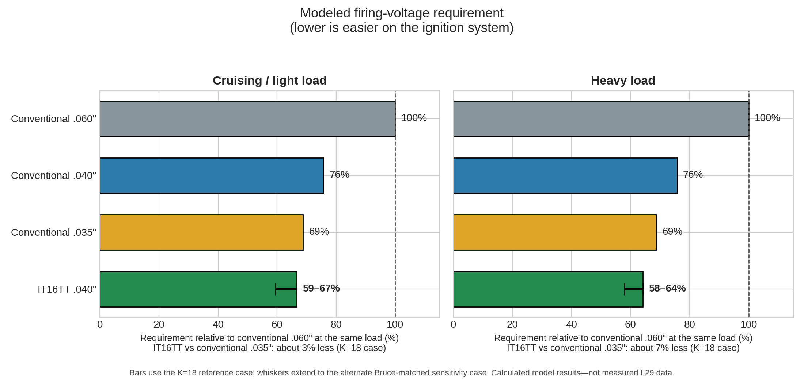
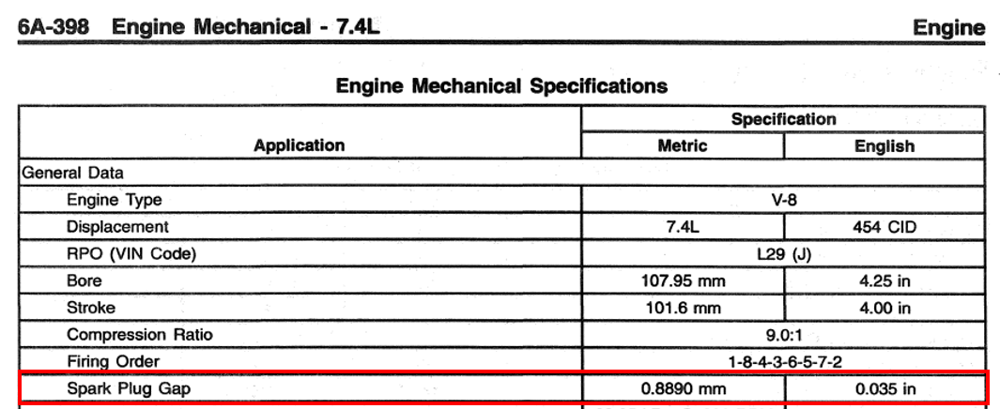
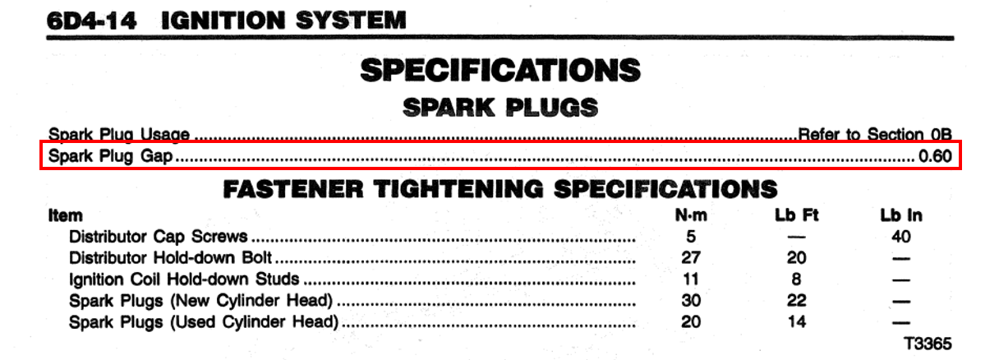
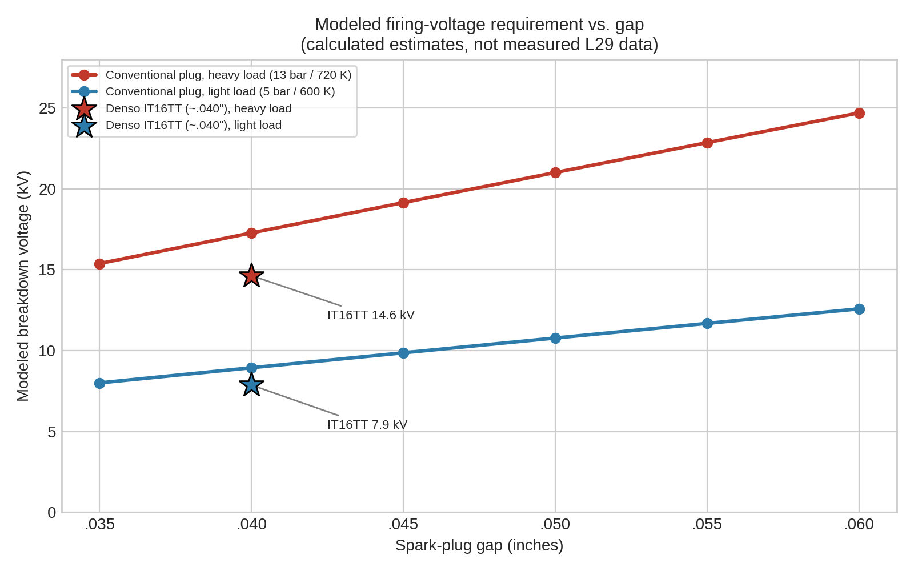
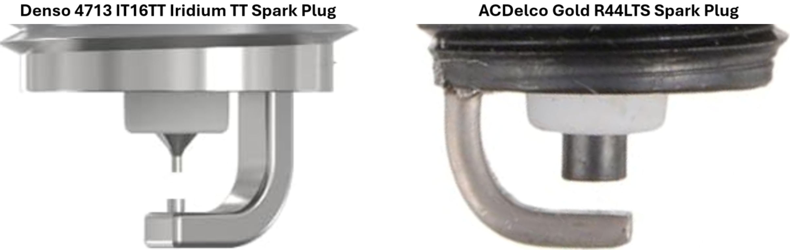
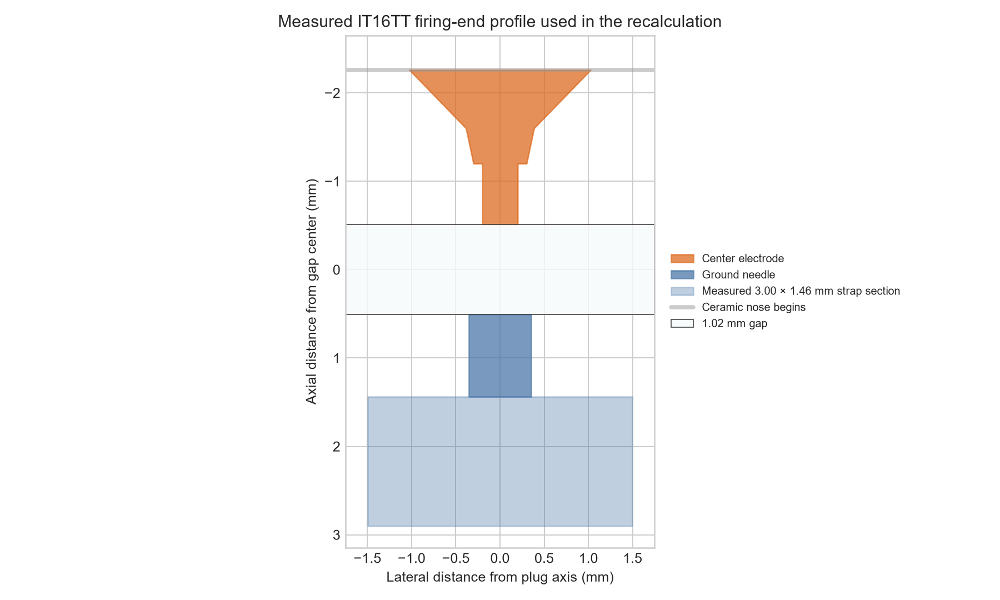
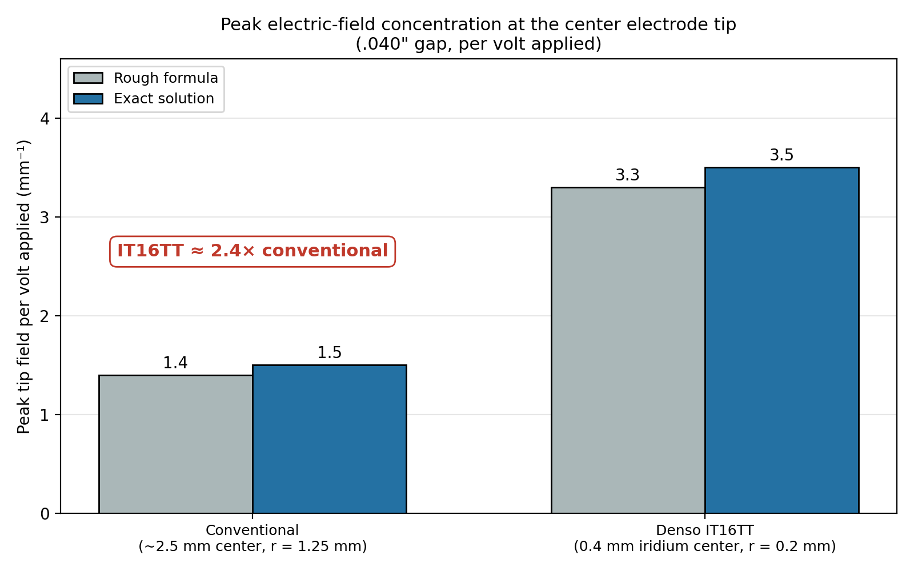
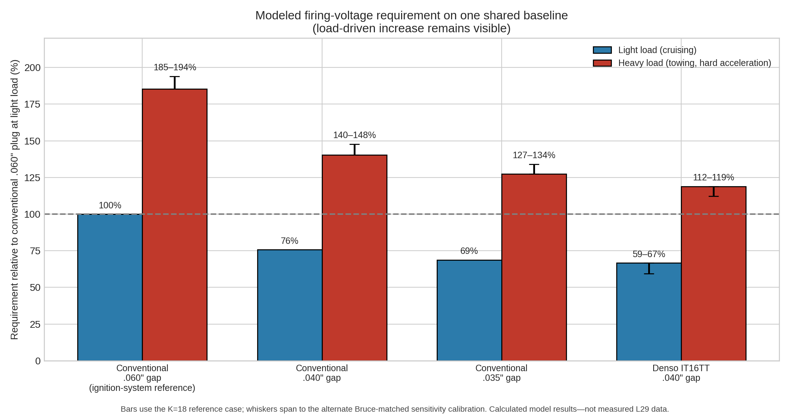
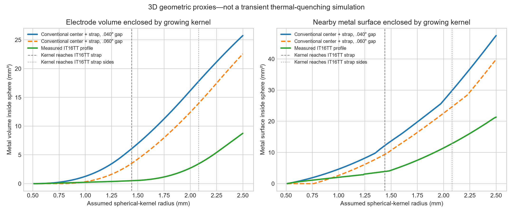
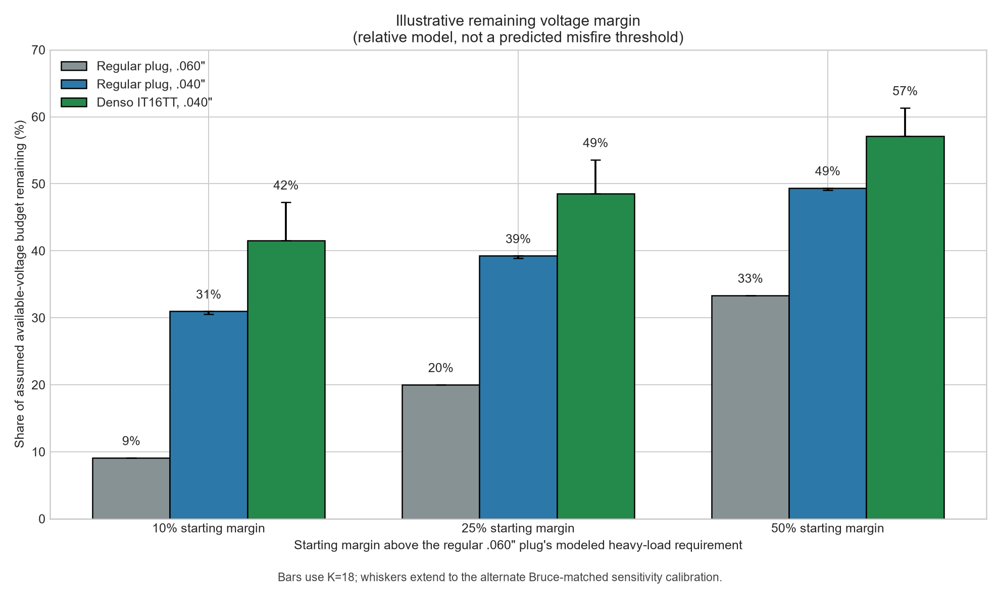

Here is the short version. I compared conventional plugs gapped from .035 to .060 inch with the Denso IT16TT at .040 inch. The calculations were run two ways because any mathematical spark-breakdown model needs an assumed point at which the electrical discharge becomes a self-sustaining spark.
The main calculation, called K = 18, uses a commonly accepted threshold and provides the figures shown first. I also ran a second calculation adjusted so that a simple, uniform air gap agrees with an older laboratory equation. That is called the Bruce-matched case, and it produces the larger figures shown in parentheses. I include it to show how sensitive the results are to the model settings, not because I consider it the expected result. Appendix C explains both methods for anyone interested in the technical details. None of these figures are ignition-scope measurements from an L29.
| Modeled firing-voltage requirement | Cruising / light load | Heavy load |
|---|---|---|
| IT16TT at .040" vs. conventional plug at .035" | about 3% less (up to 14%) | about 7% less (up to 16%) |
| IT16TT at .040" vs. conventional plug at .060" | about 33% less (up to 41%) | about 36% less (up to 42%) |
| Conventional plug at .035" vs. conventional plug at .060" | about 31% less | about 31% less |
The starting point matters: The factory manual lists both .035 and .060 inch for the L29, and that changes the comparison. Against a conventional plug at .060 inch, the IT16TT at .040 inch shows a large modeled reduction. Most of that comes from the smaller gap; a conventional plug at .035 inch already needs about 31% less voltage than one at .060 inch. Against that .035-inch plug, the IT16TT's modeled advantage is only about 3–7%.
Gap: Closing a conventional plug from .060 to .040 inch lowers the calculated requirement by about 24% in the geometry model and 29–30% in the simpler uniform-field calculation. Opening a conventional plug from .035 to .040 inch adds about 10%.
Electrode design: At the same .040-inch gap, the main model puts the IT16TT about 12% lower at light load and 15% lower under heavy load. That answer depends heavily on the assumed tip shapes; broader sensitivity runs span roughly 4–35%. The separate field calculation helps explain the trend, but its 1.75-times and 2.39-times field ratios are not voltage-saving percentages.
Reserve and durability: A plug that requires less firing voltage leaves more of the ignition system’s existing capability in reserve for hard acceleration, towing, high cylinder pressure, moisture, wear, and aging secondary-ignition parts. It does not create additional coil energy or engine power. The 3D model also shows that the IT16TT’s fine tips place less metal around much of the developing flame kernel. Just as important, the precious-metal tips should retain their shape and gap longer. The first .005 inch of modeled gap growth adds about 9–11% to a conventional plug’s voltage demand, compared with roughly 6–7% for the IT16TT.
GM precedent: GM TSB #03-06-04-060B documents GM moving a number of later V8s to an iridium-tip plug with a factory .040-inch gap, and it attributes the smaller gap to the different firing-tip design. It does not cover the L29, but it shows GM itself pairing a fine-wire tip with a tighter gap instead of treating .060 inch as a given.
L29 factory-spec discrepancy: The 1997 Chevrolet Light Duty CK Truck Service Manual, Volume 1-1 lists .035 inch in the engine-mechanical section and “.60” without units in the ignition section, which I read as .060 inch. The ignition page points to Section 0B, and the underhood emissions label may settle the question. Until then, I show both baselines instead of choosing the one that makes the result look best.
Limits: All performance numbers here are modeled estimates. No plug can fix a worn cap, rotor, wires, poor fuel delivery, or another underlying problem.
For me, the IT16TT at its roughly .040-inch factory gap is a well-supported choice based on fit and heat range. Compared with a conventional plug at .060 inch, the model shows a substantial reduction in firing-voltage demand, which should leave more ignition-system reserve under heavy load. Compared with a conventional plug at .035 inch, the calculated advantage is much smaller—about 3–7%.
The fine-wire Twin-Tip geometry also places less metal around the developing flame kernel and should retain its gap and firing-tip shape longer than a conventional nickel plug. That does not prove that it produces the same kernel as a conventional plug with a wider gap, but it does suggest that the smaller .040-inch gap does not automatically mean poorer early flame development in this case.
With all that said, I am not expecting a “magic” plug or additional horsepower. What I am looking for is reliable performance under load, a little more ignition reserve when cylinder pressure and firing-voltage demand are highest, and firing geometry that should remain consistent for a long time.

This chart compares each plug with the conventional .060-inch reference under the same load. Rounded to whole percentages, the conventional .035-inch plug requires about 69% as much modeled firing voltage, and the IT16TT at .040 inch requires 59–67% during cruising and 58–64% under heavy load. Relative to the conventional .035-inch plug, the IT16TT bars correspond to about 3% less (reference case) at light load and about 7% less at heavy load.
That is the practical answer. What follows is the deeper explanation of how I got there, including the assumptions, measurements, calculations, and limitations behind the summary above.
What started as a comparison between two spark plugs turned into a much deeper look at gap, electrode design, cylinder pressure, temperature, and ignition-system condition. The L29 is especially interesting because the 1997 service manual itself gives two different gap figures: .035 inch in the engine-mechanical section and what appears to be .060 inch in the ignition-system section. That discrepancy is what sent me down this rabbit hole.


1997 Chevrolet Light Duty CK Truck Service Manual, Volume 1-1. The engine-mechanical page lists 0.035 in. The ignition page prints 0.60 without a unit, which I read as 0.060 inch, and refers plug usage to Section 0B.
I first looked at the ACDelco R44LTS as a conventional tighter-gap option. Then I found the Denso IT16TT, which comes near .040 inch and uses a 0.4 mm iridium center tip and a 0.7 mm platinum ground tip. At that point, the question became less about brand names and more about what the gap and electrode shape ask the ignition system to do.
The basic dimensions match: both use a 14 mm thread, 17.5 mm reach, tapered seat, and essentially the same 5/8-inch/16 mm hex. Heat-range numbers do not translate directly between brands, so I checked Denso's own cross-reference. Denso maps the R44LTS to several heat-range-16 plugs, and the IT16TT is also heat range 16. The DensoProducts.com retailer application guide also lists DEN4713/IT16TT as compatible when its vehicle filter is set to the 1997 K2500 Suburban, specifying a .040-inch gap and eight plugs.
A wider gap can expose more mixture to the initial discharge and may help the flame kernel get started, but wider is not automatically better. Voltage demand rises with gap, and any possible combustion benefit disappears if the ignition starts missing under acceleration, towing, or a long grade. The practical goal is a useful gap that still leaves enough ignition reserve.
The table below shows how modeled firing voltage changes with gap under representative light- and heavy-load conditions. The load points—5 bar/600 K and 13 bar/720 K—are not measurements from my engine. They are simply consistent conditions for comparing trends. The conventional rows use the Bruce uniform-field equation; the IT16TT row adds the separate fine-tip adjustment explained later. Appendix A at the end has the step-by-step calculation.
To keep the math from turning into one big apples-to-oranges comparison, I use three separate calculations for three separate questions:
The uniform-field gap calculation compares how pressure, temperature, and gap change the baseline breakdown-voltage trend. It does not represent spark-plug electrode shape.
The idealized field and breakdown models explore how assumed tip geometry might change firing-voltage demand. Their percentages are model-dependent and are not measurements of the IT16TT or the L29.
The measured-profile geometry calculation compares how much electrode metal volume and exposed surface lie near an idealized growing flame kernel. It does not calculate firing voltage, heat transfer, or combustion improvement.
| Plug and gap | Light load | Heavy load |
|---|---|---|
| Conventional plug at .035" | ~8.0 kV | ~15.4 kV |
| Denso IT16TT at ~.040" | ~7.9 kV | ~14.6 kV |
| Conventional plug at .040" | ~8.9 kV | ~17.3 kV |
| Conventional plug at .045" | ~9.9 kV | ~19.2 kV |
| Conventional plug at .050" | ~10.8 kV | ~21.0 kV |
| Conventional plug at .055" | ~11.7 kV | ~22.9 kV |
| Conventional plug at .060" | ~12.6 kV | ~24.7 kV |
The conventional-plug rows come from the uniform-field gap calculation. The IT16TT row starts with the conventional .040-inch result and applies the fine-tip adjustment from the separate breakdown model. These are calculated comparisons under representative conditions, not predicted firing voltages for my L29.

Modeled firing-voltage requirement versus gap, from the table above. The stars show the IT16TT at about .040 inch under the same two load conditions.
The important part is the trend. Opening a conventional gap from .035 to .060 inch raises the modeled firing-voltage requirement by roughly 57–60%, and increasing cylinder pressure raises it again. The IT16TT estimate falls only slightly below the conventional .035-inch result because its fine-tip advantage is partly offset by its slightly wider .040-inch gap.
Road Trip's experience with a Sun 1115 engine analyzer helped connect this to the real world. He described firing voltage jumping during a snap-throttle test, then settling once the engine reached a steady rpm. He also saw marginal systems that ran fine at idle but lost the spark when cylinder pressure rose. That is the same basic physics showing up on a shop scope, and it is why I keep coming back to ignition reserve rather than gap alone.
Before the plug fires, the coil, coil wire, cap, rotor, and plug wire all have to carry enough voltage to break down the plug gap. As that requirement rises, moisture, carbon tracking, cracked insulation, or worn secondary parts become more likely to offer an easier path.
That matters on the L29 because the Vortec crab-cap distributor has a reputation among owners for cap and rotor trouble. GMT400 discussions also commonly mention successful gaps around .040–.045 inch on distributor-equipped Vortec engines. Those reports are useful experience, not fleet data, but they point in the same direction as the model: a tighter gap uses less of the system's available voltage.
That does not mean .060 inch cannot work in a healthy system, and a lower-demand plug will not repair a tracking cap, worn rotor, or leaking wire. It only leaves more room before one of those weaknesses becomes the easier path.
GM TSB #03-06-04-060B documents a later switch from platinum plugs to the .040-inch ACDelco 41-985 iridium plug on several V8 applications. GM told technicians not to alter the factory gap and tied the change to the different firing-tip design.
The bulletin does not cover the L29, L30, or L31, so it is not a direct specification for these engines. I include it only because it shows GM pairing a smaller gap with a different electrode design instead of treating .060 inch as automatically better.
Two plugs with the same gap do not necessarily ask the same thing from the ignition system. A conventional plug uses a relatively large center electrode and wide ground strap. The IT16TT uses a 0.4 mm iridium center tip and a 0.7 mm platinum ground tip.


Measured IT16TT firing-end profile used in the three-dimensional geometry calculation.
Those measurements improve the later 3D flame-kernel comparison because they describe the metal behind the firing faces. The simpler field calculation below still depends mainly on the gap and assumed tip radii. In plain language, a small tip concentrates the electric field more strongly than a broad one, which can help start the discharge at a lower applied voltage.
To get a feel for the size of that effect, I compared an assumed 1.25 mm conventional tip radius with the IT16TT's 0.20 mm center-tip radius at the measured 1.02 mm gap. Appendix B has the math.
| Electrode | Tip radius r | Rough formula (per volt) | Exact solution (per volt) | Relative to conventional |
|---|---|---|---|---|
| Conventional (~2.5 mm center) | 1.25 mm | ~1.4 mm⁻¹ | 1.471 mm⁻¹ | 1.0× |
| IT16TT iridium (0.4 mm center) | 0.2 mm | ~3.3 mm⁻¹ | 3.520 mm⁻¹ | 2.39× |

Exact ideal-hyperboloid values at the measured 1.02 mm gap. The rough estimates remain in the table above for comparison but are not plotted.
At 10 kV, the flat-ground calculation gives about 14.7 kV/mm at the conventional tip and 35.2 kV/mm at the IT16TT center tip—a 2.39-times ratio. That is not a prediction of 2.39 times less firing voltage. It also assumes a flat ground. When the IT16TT's small ground tip is included, the center-tip value drops to about 25.9 kV/mm, or roughly 1.75 times the conventional value, while the ground tip creates a second weaker peak. The point is simply that tip shape matters; the breakdown model below is what estimates the voltage difference.
For this comparison, I kept the gas conditions, load, and gap the same and changed only the assumed electrode geometry:
Conventional plug: An assumed 1.25 mm center-electrode radius facing a flat ground strap.
Denso IT16TT: A 0.20 mm center-electrode radius facing the 0.35 mm-radius ground tip created by its 0.70 mm Twin-Tip electrode.
The exact point at which an electrical discharge becomes a self-sustaining spark is uncertain, so I ran the calculation with two different thresholds. The K = 18 result is the main calculation. The Bruce-matched case is a sensitivity check that produces larger advantages but uses a much lower threshold, so I do not treat it as equally realistic. The first number shown below comes from the main model; the number in parentheses comes from the sensitivity check.
| What changes | Cruising / light load | Towing / hard acceleration |
|---|---|---|
| Conventional .035" → IT16TT .040" | 3% less (14%) | 7% less (16%) |
| Conventional .040" → IT16TT .040" | 12% less (22%) | 15% less (24%) |
| Conventional .060" → IT16TT .040" | 33% less (41%) | 36% less (42%) |
| Conventional .060" → .035" | about 31% less | about 31% less |
| Conventional .060" → .040" | about 24% less | about 24% less |
| Conventional .035" → .040" | about 10% more | about 10% more |
The first comparison is the most relevant if the L29’s intended conventional-plug gap is .035 inch. The third shows what happens when the IT16TT at .040 inch is compared with the .060-inch specification found elsewhere in the service manual. Keeping both references visible avoids choosing only the baseline that produces the largest result.

This chart keeps one shared baseline—the conventional .060-inch plug under light load—so the rise under heavy load remains visible. The opening chart resets the .060-inch plug to 100% within each load. Bars use the main model; whiskers show the alternate sensitivity result.
In the main model, the IT16TT at .040 inch behaves roughly like an assumed conventional plug around .032–.034 inch. That is why it lands just below the conventional .035-inch reference despite having a slightly wider gap.
Compared with a conventional .060-inch plug, the IT16TT at .040 inch shows a 33–36% reduction, with about 24 percentage points coming from the smaller gap. Compared with a conventional .035-inch plug, the net difference is only 3–7%. The simpler uniform-field equation gives a somewhat larger 29–30% gap-only reduction from .060 to .040 because it responds to gap differently from the curved-tip model.
Four limitations are worth stating plainly:
Tip shape is the weakest input. Changing the assumed radii moves the same-gap advantage through a much wider range of roughly 4–35%. A real conventional electrode has sharper edges than the 1.25 mm face radius used in the simplified model, which could move the IT16TT advantage toward the lower end.
The 2.39-times field ratio is an idealized result. It describes the IT16TT center tip facing a flat ground. When the actual Twin-Tip ground needle is included, the center-tip comparison falls to about 1.75 times while a second, weaker field peak forms at the ground tip. Neither number is a firing-voltage-saving percentage.
A real cylinder is much more complicated. The model does not reproduce mixture motion, turbulence, fuel composition, residual exhaust, electrode temperature, combustion-chamber geometry, or every part of the electrical path. The load points are representative conditions, not measurements from my engine.
Polarity and temperature may also matter. I have not measured either one on this L29, so the model cannot divide the result precisely between the center tip, ground tip, polarity, and electrode temperature. Only a secondary-ignition scope test on the truck can show the real firing-voltage difference.
Iridium and platinum matter mainly because they tolerate heat and erosion well enough to preserve these small firing surfaces. The geometry provides the possible electrical and flame-kernel advantages; the precious metals help that geometry remain consistent in service.
Lower firing-voltage demand is only part of the comparison. I also built a 3D profile from measurements of the actual IT16TT to estimate how much metal surrounds a growing flame kernel. Appendix D has the details.
Once the spark jumps the gap, nearby metal can draw heat from the young flame and physically occupy space around it. To compare the two designs, I calculated the amount of electrode metal volume and exposed metal surface lying inside an idealized spherical kernel centered in the gap.
The IT16TT model uses measurements of the actual center tip, both tapered sections, ground needle, gap, and strap. The conventional reference uses an assumed 2.5 mm cylindrical center electrode and a strap with the same measured width and thickness as the IT16TT, but without the projecting ground needle. Photographs show that the R44LTS strap is broadly similar, but I did not measure that plug the same way. This is therefore a comparison between the measured IT16TT and an assumed R44LTS-style reference, not two fully measured plugs.

Three-dimensional geometric proxies, not a transient thermal-quenching simulation. The dashed line marks the approximately 1.44 mm kernel radius at which the idealized sphere first reaches the IT16TT ground strap; the dotted line marks the approximately 2.08 mm radius at which it reaches the IT16TT strap's visible sides. The IT16TT strap's back face is approximately 2.90 mm from the gap center, beyond the plotted range.
At a modeled kernel radius of 1.0 mm, the IT16TT contains about 81% less metal volume and 56% less metal surface than the same-gap conventional reference. At 1.5 mm, the differences are about 92% and 69%. The complete values are included in Appendix D.
I also compared the IT16TT at .040 inch with the assumed conventional geometry at .060 inch. At a 1.0 mm kernel radius, the IT16TT contains about 28% less metal volume and 23% less surface. At 1.5 mm, it contains about 87% less volume and 60% less surface.
The IT16TT is not better at every instant. Before a centered kernel reaches half of the conventional .060-inch gap, it has not touched those wider-gap electrodes at all. Beyond roughly a 1 mm kernel radius, however, the IT16TT’s much smaller tips more than offset the wider conventional gap in these two geometric measures.
These results are consistent with less early heat loss, but this is not a heat-transfer or combustion simulation. The percentages do not mean an equal reduction in thermal quenching, and they do not predict horsepower. The narrow conclusion is that the measured IT16TT geometry places less metal around much of the modeled early kernel than the assumed conventional reference. Published experiments provide support for that general direction, but the actual effect on an L29 would have to be measured.
The precious metals matter mainly because they help the plug keep the gap and fine firing shape that make it easier to fire.
Gap growth. As a plug wears and its gap opens, the required firing voltage continues to rise. Starting from .040 inch:
| Gap growth | Conventional plug: additional voltage required | IT16TT: additional voltage required |
|---|---|---|
| +.005" to .045" | 9–11% | 6–7% |
| +.010" to .050" | 17–22% | 11–13% |
| +.015" to .055" | 24–32% | 16–18% |
| +.020" to .060" | 31–43% | 21–23% |
The conventional-plug range comes from the two calculations used earlier. The IT16TT values come from the fine-tip model. I do not have wear-rate data showing how quickly either plug reaches these gaps, so the figures show the cost of gap growth—not the service life of either plug.
Tip shape. The IT16TT's advantage depends on the tip staying small. Holding the gap at .040 inch and the ground tip fixed, here is how the modeled advantage over a conventional plug changes as the effective radius of the center tip grows (each range spans both thresholds and both loads):
| Effective center-tip radius | IT16TT advantage over a conventional plug at the same gap |
|---|---|
| 0.2 mm (as designed) | 12–24% |
| 0.3 mm | 7–14% |
| 0.4 mm | 5–10% |
Doubling the effective tip radius from 0.2 to 0.4 mm removes about 58% of the modeled advantage. This is a what-if check, not a wear prediction. It simply shows that the benefit lasts only as long as the fine tip keeps its shape.
Another way to look at the results is to ask how much of an assumed voltage reserve remains under heavy load. I do not know the actual reserve of any particular L29, so the table uses three hypothetical starting points. Each starts with a conventional .060-inch plug as the reference.
| Starting margin with a conventional .060" plug | Conventional plug, .060" | Conventional plug, .040" | Conventional plug, .035" | Denso IT16TT, .040" |
|---|---|---|---|---|
| 10% | 9% | 31% | 38% | 42% (47% alternate) |
| 25% | 20% | 39% | 45% | 49% (54% alternate) |
| 50% | 33% | 49% | 54% | 57% (61% alternate) |

Share of the assumed available-voltage budget remaining above each modeled heavy-load requirement. Bars and the first numbers in the table use K = 18; whiskers and parenthetical values show the alternate Bruce-matched sensitivity result (it changes the .035-inch and .040-inch figures by less than a point). This is a relative illustration, not a predicted misfire threshold.
At the 25% starting point, the modeled reserve is about 20% with the conventional .060-inch plug, 39% at .040 inch, 45% at .035 inch, and 49% with the IT16TT. Notice that the IT16TT is only 3–4 percentage points ahead of the conventional .035-inch plug. This is a relative illustration, not a misfire prediction: it does not use measured coil output and it leaves out fixed losses such as the rotor gap.
Firing voltage is the voltage needed to start the spark. It is not the same as the energy delivered afterward. Once the gap ionizes, its voltage drops and the coil continues feeding current through the spark for a short time—usually called spark duration or burn time.
That energy depends on the coil, primary current, dwell time, RPM, wiring, grounds, and ignition electronics. Higher RPM leaves less time to charge the coil, which is one reason a system can look fine at idle yet struggle under load.
The plug therefore asks the ignition system to do two jobs: break down the gap, then supply enough energy to establish a stable flame kernel. An easier-to-fire plug does not create more coil energy or guarantee a longer spark. It simply uses less of the system's available voltage to begin the event.
None of this changes the need for the correct heat range. Heat range describes how quickly the firing end passes heat into the cylinder head; it does not mean spark temperature or ignition strength. Too cold can encourage fouling, while too hot can raise the risk of pre-ignition and electrode damage.
Rather than trying to translate ACDelco and Denso heat-range numbers directly, I used Denso’s own cross-reference. Denso maps the R44LTS to several Denso heat-range-16 plugs, and the IT16TT is also heat range 16. Its 14 mm thread, 17.5 mm reach, tapered seat, and 16 mm hex also match the required basic dimensions.
The DensoProducts.com application catalog additionally lists DEN4713/IT16TT as compatible when the vehicle filter is set to the 1997 GMC K2500 Suburban, specifying a .040-inch gap and eight plugs. That is a retailer application guide rather than Denso’s corporate technical catalog, so I treat it as supporting application information rather than the sole proof of fit.
None of the geometry calculations determine heat range. A fine tip can place less metal beside the developing kernel without making the plug itself hotter or colder. As with any replacement plug, I would still inspect the IT16TTs after the truck’s hardest use—towing, long grades, hot weather, or sustained heavy load.
A .060-inch plug bent down to .040 inch is not necessarily the same as a plug designed for .040 inch. Moving the strap that far changes its position relative to the center electrode.
Fine-wire tips are durable in service but easy to damage while gapping. Since the IT16TT already comes close to the gap I want, I plan to check each one with a round wire gauge and otherwise leave it alone. Never pry against the center electrode, and follow the service manual and plug manufacturer's instructions for torque and anti-seize.
Staying near .060 inch with a durable plug is also reasonable. One example is the ACDelco 41-979 double-platinum, which GM lists with a .060-inch gap, 17.5 mm reach, tapered seat, and 16 mm hex. Its double-platinum construction should help with wear and gap retention, but the published dimensions do not show an IT16TT-style 0.2 mm firing tip. I therefore do not assign it a modeled voltage reduction.
As a separate what-if calculation, an IT16TT-style fine tip at .060 inch comes out 18–30% below the conventional .060-inch reference. It lands within about 8% either way of a conventional .040-inch plug, but still needs 21–23% more voltage than the same fine tip at .040 inch. Compared with a conventional .035-inch plug, it needs about 14–19% more in the reference model and 1–5% more in the alternate. These numbers describe the hypothetical geometry—not the 41-979. Without actual tip measurements or direct testing, I cannot put a number on that plug's advantage.
The more I looked at this, the less useful the usual “copper versus iridium” argument became. What matters is the complete package: the correct thread, reach, seat, protrusion, and heat range; a sensible gap; the firing-tip geometry; how well that geometry holds up; and how much ignition reserve remains when the engine is working hardest.
A good conventional plug at .035–.045 inch can be easy to fire and work extremely well. A properly chosen fine-wire plug can do the same while retaining its gap and firing-tip shape longer. On the other hand, a fine-wire plug with a very large gap can still place substantial demand on the ignition system. There really is no magic plug.
That is why the IT16TT makes sense to me for the L29. It has the correct basic dimensions and Denso heat range, and it is listed for the 1997 K2500 Suburban application in the DensoProducts.com catalog. It also comes in the gap range I want without requiring me to bend a .060-inch plug far from its original configuration.
I expect the truck to run much the same during normal driving as it would with a good set of R44LTS plugs. The model shows a 12–15% main-case advantage over a conventional plug at the same .040-inch gap, but only about 3–7% over a conventional plug at .035 inch. Those figures are estimates, not promises. If there is a useful real-world benefit, I expect it to appear as better long-term retention of the gap and firing shape, along with a modest amount of additional ignition reserve under load—not additional horsepower or a dramatic change in how the truck drives.
The cleanest test would be a secondary-voltage scope capture during a snap-throttle test, comparing a conventional plug at .035 inch with the IT16TT at .040 inch under the same conditions. Even one good before-and-after comparison would tell us more about the real difference than another round of modeling.
Electrical breakdown is also only the beginning. Mixture quality, turbulence, fuel preparation, residual exhaust, temperature, compression, and the energy delivered after the spark begins all affect whether a stable flame develops. A spark plug cannot fix weak fuel pressure, poor injectors, bad sensor inputs, low compression, or another underlying engine problem.
The same reasoning applies to any properly designed fine-wire plug selected with the engine, gap, heat range, and ignition system in mind.
Where the plugs come from matters too. Counterfeit ignition and engine-management parts can look convincing, perform poorly, and create symptoms that send a good diagnosis in the wrong direction. I prefer buying from the manufacturer or an authorized seller whenever possible. Denso provides an official Where to Buy page.
Denso's official Iridium TT specifications list the IT16TT's 14 mm thread, 17.5 mm reach, 16 mm hex, 1.0 mm nominal gap, tapered seat, and related dimensions.
Denso's Iridium TT technical overview describes the 0.4 mm iridium center, 0.7 mm needle-type platinum ground electrode, lower required-voltage principle, and reduced interference with flame growth.
Denso's official cross-reference search lists R44LTS against T16EPR-U, IT16, and VT16, supporting the Denso heat-range-16 comparison.
The retailer DensoProducts.com application listing identifies DEN4713/IT16TT as compatible when its vehicle filter is set to the 1997 GMC K2500 Suburban and specifies a .040-inch gap with eight plugs required. Because this result depends on the selected vehicle filter and comes from a retailer application guide, I identify it separately from Denso’s corporate technical and cross-reference information.
Denso’s heat-range explanation explains how firing-end construction and the plug’s heat-transfer path determine operating temperature. The actual comparison between the R44LTS and Denso heat-range-16 plugs comes from Denso’s cross-reference search rather than from assuming that different manufacturers’ numbering systems are interchangeable.
GM bulletin #03-06-04-060B, Information on New Spark Plugs and Gapping, documents the later GM applications and the factory-set .040-inch iridium-plug gap discussed above.
GM's official ACDelco 41-979 product page identifies it as a double-platinum, tapered-seat plug with a 17.5 mm reach and 1.6 mm/.060-inch gap. Those data do not specify an IT16TT-style firing-tip radius.
Pischinger and Heywood, SAE 900021, directly compared conventional and smaller electrodes and found reduced electrode heat loss and a wider stable operating regime with the smaller geometry. Lee and Boehler, SAE 2005-01-1133, and Alger et al., SAE 2006-01-0224, provide further experimental context for the effect of electrode geometry on early flame-kernel development, lean ignitability, and engine stability.
F. M. Bruce's 1947 uniform-field spark-gap paper is the source of the empirical relation used in Appendix A. It concerns carefully shaped uniform-field electrodes in air—not a running spark plug—which is why I use it only as a baseline trend calculation.
The Incept1D field-distribution documentation gives the hyperboloid-to-plane and confocal-hyperboloid field solutions used for the idealized geometry comparisons.
The Townsend constants and their limited reduced-field range are summarized in the Incept1D Paschen-law documentation. The streamer threshold is the approximate Meek–Raether criterion discussed in Nijdam, Teunissen, and Ebert's review, The physics of streamer discharge phenomena.
I also want to give Road Trip—one of the real assets of the GMT400.com community—credit for the discussions that helped shape this write-up. His experience with older ignition analyzers, firing voltage under load, and marginal systems kept this from becoming purely theoretical. His approach—compare the weak example with the best one and keep going until the reason is understood—also helped me think in terms of ignition reserve instead of simply asking whether the system technically "works."
Thanks for reading through my rambling. Hopefully this has been informative and useful to someone else going down the same rabbit hole. —Deepsiks
This section is optional reading for anyone who wants to check the assumptions and arithmetic behind the article. The practical conclusions do not require following every equation, but the details are included so the calculations can be reviewed, challenged, or repeated.
The conventional-plug rows come from the empirical Bruce fit for the breakdown voltage of air between uniform-field electrodes:
V_b ≈ 24.22 · δd + 6.08 · √(δd)
Here V_b is the breakdown voltage in kilovolts, d is the gap in centimeters, and δ is the relative air density, which is the pressure in atmospheres scaled by 293 K divided by the gas temperature:
δ = (P / 1.01325 bar) × (293 K / T)
Higher pressure packs more gas molecules into the gap, and a hotter gas has fewer of them, so δ captures both effects in one number.
Worked example: conventional plug at .040 inch (d = 0.1016 cm)
Light load (5 bar, 600 K):
δ = (5 / 1.01325) × (293 / 600) = 4.935 × 0.488 = 2.41
δd = 2.41 × 0.1016 = 0.245
V_b = 24.22 × 0.245 + 6.08 × √0.245 = 5.93 + 3.01 = 8.9 kV
Heavy load (13 bar, 720 K):
δ = (13 / 1.01325) × (293 / 720) = 12.83 × 0.407 = 5.22
δd = 5.22 × 0.1016 = 0.530
V_b = 24.22 × 0.530 + 6.08 × √0.530 = 12.85 + 4.43 = 17.3 kV
Every other conventional row uses the same steps with a different gap. At .060 inch (d = 0.1524 cm), light load gives δd = 0.367 and V_b = 8.89 + 3.68 = 12.6 kV, and heavy load gives δd = 0.796 and V_b = 19.27 + 5.42 = 24.7 kV.
The two terms explain a pattern in the table. The first term is proportional to gap, but the square-root term grows more slowly, so voltage rises a little less than the gap does. Going from .035 to .060 inch makes the gap 71% larger, yet the required voltage rises only 57% under light load and 60% under heavy load.
The IT16TT row. Because this formula assumes a uniform field, it knows nothing about electrode shape. For the IT16TT, I took the conventional .040-inch value from the formula and reduced it by the K = 18 reference-case advantage from the Appendix C breakdown model: about 12.0% at light load and 15.3% at heavy load. That gives about 7.9 kV (light) and 14.6 kV (heavy). Expressed as an effective gap in the same formula, those values correspond to about .034 inch under light load and .033 inch under heavy load, roughly 14% and 18% smaller than the real .040-inch gap. The reduction comes from a geometry model with its own uncertain assumptions (see the sensitivity ranges in the main text), so the row is an illustration of scale, not a measurement.
Limits of this method. The Bruce fit was developed for carefully shaped uniform-field spark-gap electrodes in air near atmospheric conditions. Applying it at 5 to 13 bar is an extrapolation, and a real spark plug has a strongly nonuniform field in a hot combustion mixture rather than a uniform field in laboratory air. The load points are representative rather than measured. That is why I treat the table as showing trends in gap and load, not as predictions of what the L29 will actually require.
Rough formula. A common point-to-plane (hyperboloid) approximation for the peak electric field at a tip is:
E_max ≈ 2V / (r · ln(4d/r))
Here V is the applied voltage, r is the tip radius, and d is the gap. Using the measured d = 1.02 mm:
Conventional (r = 1.25 mm): 4d/r = 4.08 / 1.25 = 3.26, so ln(4d/r) = 1.18. Then r · ln(4d/r) = 1.48 mm, and E_max / V ≈ 2 / 1.48 ≈ 1.4 per mm.
IT16TT (r = 0.2 mm): 4d/r = 4.08 / 0.2 = 20.4, so ln(4d/r) = 3.02. Then r · ln(4d/r) = 0.60 mm, and E_max / V ≈ 2 / 0.60 ≈ 3.3 per mm.
Exact solution. For a hyperboloid tip facing a flat plane, the peak field can be written exactly. Define η₀ = √(d / (d + r)) and a = d / η₀. Then:
E_max / V = 1 / ( a · atanh(η₀) · r/(d + r) )
Conventional (r = 1.25 mm): E_max / V ≈ 1.471 per mm.
IT16TT (r = 0.2 mm): E_max / V ≈ 3.520 per mm.
The ratio of the two values is 3.520 / 1.471 ≈ 2.39. The rough formula runs slightly low for both electrodes. This is exact only for the assumed hyperboloid-to-plane boundary geometry, not for the complete physical plug. The measured taper lengths do not enter this closed-form solution, and a full numerical model would also require the microscopic firing-edge curvature, ground-strap cross-section, ceramic dielectric geometry, shell location, and electrical boundary conditions.
For anyone who wants to check the method: the field along the gap axis comes from the exact solution for a hyperboloid tip facing a plane (or a second, confocal hyperboloid for the Twin-Tip ground electrode). Gas ionization uses a Townsend-type coefficient for air, α/p = A·exp(−B·p/E) with A = 15 cm⁻¹·Torr⁻¹ and B = 365 V/(cm·Torr), with pressure scaled to a 293 K equivalent density. Breakdown is declared at the voltage where the ionization coefficient integrated along the gap axis reaches a threshold K.
The threshold is the least certain input, so I ran two values to bracket the answer. K = 18 is a typical streamer-breakdown criterion. K ≈ 1.3 is the value that makes a uniform-field gap reproduce the Bruce-equation baseline in the first table, so I refer to it as the Bruce-matched case. It is low enough that I do not consider it physically realistic, but it keeps the two parts of the article on the same numerical footing and is useful as a sensitivity check. One further caution: these ionization constants are normally quoted for field-to-pressure ratios of roughly 100–800 V/(cm·Torr), and in this model most of the gap sits below that range, with only the region right at the tip reaching it. That is another reason to trust the plug-to-plug percentages more than any individual voltage value.
Three-way comparison values. Relative to a conventional .060-inch plug at the same load, the K = 18 model gives about 0.688 (light) and 0.687 (heavy) for a conventional .035-inch plug, 0.757 for a conventional .040-inch plug, and 0.667 (light) and 0.642 (heavy) for the IT16TT at .040 inch. The Bruce-matched case gives about 0.690 and 0.691 for the .035-inch plug and 0.594 and 0.579 for the IT16TT. These recomputed values agree with the published .040-inch and IT16TT ratios to within about 0.002. The IT16TT-versus-.035-inch comparison in the main text is the ratio of the IT16TT values to the .035-inch values: 0.667 / 0.688 = 0.97 and 0.642 / 0.687 = 0.93 in the reference case, and 0.594 / 0.690 = 0.86 and 0.579 / 0.691 = 0.84 in the alternate case.
| Kernel radius | IT16TT metal volume | Conventional volume | Less volume | IT16TT metal surface | Conventional surface | Less surface |
|---|---|---|---|---|---|---|
| 0.75 mm | 0.104 mm³ | 0.242 mm³ | 56.9% | 1.115 mm² | 1.900 mm² | 41.3% |
| 1.00 mm | 0.237 mm³ | 1.262 mm³ | 81.2% | 2.039 mm² | 4.649 mm² | 56.1% |
| 1.25 mm | 0.371 mm³ | 3.452 mm³ | 89.3% | 3.077 mm² | 8.183 mm² | 62.4% |
| 1.50 mm | 0.557 mm³ | 6.974 mm³ | 92.0% | 4.291 mm² | 13.667 mm² | 68.6% |
| 2.00 mm | 2.712 mm³ | 16.181 mm³ | 83.2% | 11.443 mm² | 26.668 mm² | 57.1% |
| 2.50 mm | 8.755 mm³ | 25.746 mm³ | 66.0% | 21.333 mm² | 47.488 mm² | 55.1% |
These values compare the measured IT16TT profile with the assumed same-gap conventional geometry described above. They are geometric volume and surface-area proxies, not calculated reductions in heat loss, thermal quenching, or combustion time.
Three-dimensional kernel geometry. I modeled the developing kernel as a sphere of radius R centered midway across the measured 1.02 mm gap. The IT16TT center-electrode profile consists of a 0.69 mm-long cylinder with a 0.20 mm radius, a 0.40 mm-long frustum widening from 0.30 to 0.385 mm radius, and a 0.66 mm-long frustum widening from 0.385 to 1.025 mm radius. The ground needle is a 0.93 mm-long cylinder with a 0.35 mm radius. Its back face places the front of the ground strap 1.44 mm from the gap center. The strap's measured thickness converts to approximately 1.46 mm, placing its back face about 2.90 mm from the gap center. A separate side-profile scale gives a visible strap width of approximately 3.00 mm. Because the bend extends away behind the center electrode in that view, the unresolved direction is treated as long over the kernel region. The step from the 0.20 mm straight tip to the 0.30 mm start of the first taper is counted as an exposed annular shoulder.
For an axisymmetric electrode with radius r(z), the metal volume lying inside the spherical kernel is:
V(R) = ∫ π · min[r(z)², R² − z²] dz
The actual lateral metal surface inside the sphere is:
A(R) = ∫ 2πr(z) · √[1 + (dr/dz)²] dz
with only points satisfying z² + r(z)² ≤ R² included. The firing faces, the annular shoulder, and—once R exceeds 1.44 mm—the reached portion of the ground strap are added separately. The strap is represented as a rectangular section 3.00 mm wide and 1.46 mm thick, extending from 1.44 to 2.90 mm from the gap center and continuing along the hidden direction toward its bend. The circular footprint where the 0.7 mm ground needle joins the strap is subtracted from the strap's exposed front surface so that it is not counted twice. The sphere first reaches the strap's front face at R = 1.44 mm and its visible side edges at R = √(1.44² + 1.50²) ≈ 2.08 mm. It does not reach the 2.90 mm back face anywhere in the plotted range.
For the conventional reference, one 1.25 mm-radius cylindrical center electrode begins at the center-electrode gap face. The opposing ground side is a rectangular strap using the same approximately 3.00 mm width and 1.46 mm thickness as the measured IT16TT strap, but with no projecting needle; its front face therefore begins directly at the conventional gap face. The hidden direction toward the bend is again treated as long over the modeled kernel region.
At R = 1.50 mm, the measured IT16TT profile contains 0.557 mm³ of metal volume and 4.291 mm² of exposed metal surface inside the sphere. The corrected same-gap conventional center-and-strap reference contains 6.974 mm³ and 13.667 mm². The IT16TT therefore has approximately 92.0% less enclosed metal volume and 68.6% less enclosed metal surface at that kernel radius.
For the cross-gap check, I moved the conventional center and strap firing faces from ±0.510 mm to ±0.762 mm, corresponding to a .060-inch gap, without changing the center radius or strap dimensions. At R = 1.00 mm, that wider-gap reference contains 0.328 mm³ of metal volume and 2.635 mm² of surface, so the IT16TT at .040 inch contains 27.7% less volume and 22.6% less surface. At R = 1.50 mm, the wider-gap reference contains 4.280 mm³ and 10.681 mm², giving the IT16TT 87.0% less volume and 59.8% less surface. For R ≤ 0.762 mm, the centered sphere does not yet intersect the .060-inch reference electrodes, so no universal advantage is claimed for that earliest interval.
These are geometric obstruction and heat-transfer-area proxies, not calculated reductions in thermal quenching. The percentages change with kernel radius and begin to fall after the sphere reaches the IT16TT ground strap.
Gap growth. The conventional-plug ranges combine two sources: the geometry model from Appendix C (conventional tip, 1.25 mm radius, facing a flat ground) and the uniform-field formula from Appendix A. The IT16TT values come from the Appendix C model alone, using the same two thresholds and both load conditions. The uniform-field formula rises faster with gap than the geometry model does, for the reason given earlier in the article.
Tip shape. The same Appendix C model, with the IT16TT's center-tip radius set to 0.2, 0.3, and 0.4 mm, the ground tip fixed at 0.35 mm, and the gap at .040 inch, compared against the conventional plug. Both thresholds and both load conditions were run, and the 58% reduction in advantage at 0.4 mm held in all four cases.
Illustrative voltage margin. Let R₆₀ be the heavy-load voltage requirement of a conventional .060-inch plug, and let the assumed available voltage be (1 + M) × R₆₀, where M is the starting margin. The share of that assumed budget remaining above a modeled requirement is 1 − (requirement ÷ available voltage). From the relative heavy-load results, a conventional .040-inch plug needs about 0.759 × R₆₀ in the K = 18 reference case, a conventional .035-inch plug needs about 0.687 × R₆₀, and the IT16TT needs about 0.643 × R₆₀. The alternate Bruce-matched sensitivity calibration gives about 0.762, 0.691, and 0.580, respectively. This calculation does not establish an actual misfire threshold.
Worked example, M = 25%: available voltage = 1.25 × R₆₀.
Conventional .060": 1 − 1.00 / 1.25 = 20%
Conventional .040": 1 − 0.759 / 1.25 = 39%
Conventional .035": 1 − 0.687 / 1.25 = 45%
IT16TT .040": 1 − 0.643 / 1.25 = 49% (54% with the alternate 0.580 ratio)
Fine tip at .060 inch. The same Appendix C model, with an IT16TT-style tip (0.2 mm center radius, 0.35 mm ground radius) at a .060-inch gap (1.524 mm), compared four ways. Against a conventional plug at .060 inch, it requires 18–30% less voltage. Against the same fine tip at .040 inch, it requires 21–23% more. Against a conventional plug at .040 inch, it requires between 8% less and 8% more, depending on the threshold and load. Against a conventional plug at .035 inch, it requires about 14–19% more in the reference case and 1–5% more in the alternate case. Both thresholds and both load conditions were run.
Except where otherwise noted, the original text, calculations, tables, and author-created graphics in this project are © 2026 rkolbi and are licensed under the Creative Commons Attribution–ShareAlike 4.0 International License.
You are free to copy, redistribute, adapt, and build upon this material, including for commercial purposes, provided that you:
Give appropriate credit to rkolbi.
Link back to the original project at https://github.com/rkolbi/Spark_Plugs.
Identify any changes you made.
Distribute modified versions under the same CC BY-SA 4.0 license or a compatible license.
If you correct, expand, or otherwise improve this work, I strongly encourage you to submit the improvement to the original repository through a pull request or issue so it can be reviewed and incorporated for everyone’s benefit.
Third-party product photographs, service-manual excerpts, trademarks, and other externally sourced material remain the property of their respective owners and are not covered by this license unless specifically stated otherwise.